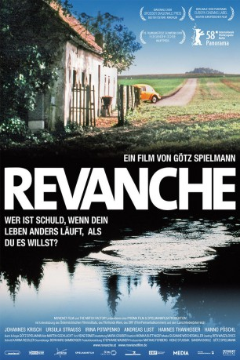
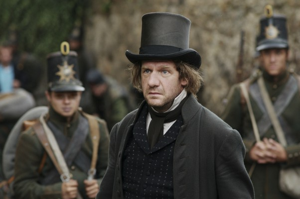

#1092 Revanche
Auszeichnungen: für 1 Oscars nominiert
 
 IMDB-Wertung: 7.6 / 10
IMDB-Wertung: 7.6 / 10  Metascore: 84
Metascore: 84 
Der Ex-Häftling Alex arbeitet in Wien für den Bordellbesitzer Konecny und hat ein heimliches Verhältnis mit der jungen, ukrainischen Prostituierten Tamara. Da beide gemeinsam ein neues Leben anfangen wollen, aber mit dem Verdienten gerade so über die Runden kommen, fasst Alex einen verzweifelten Plan als er seinen Großvater auf dem Land besucht: Er will die Bank in der nahe gelgenen Kleinstadt überfallen, um an Geld für einen Neuanfang zu kommen. Während des Aufenthalts auf dem Bauernhof des Großvaters trifft er kurz auf dessen Nachbarin Susanne), die mit dem jungen Polizisten Robert verheiratet ist und regelmäßig nach dem alten Mann sieht. Als Alex die Bank einige Tage später überfällt, wartet Tamara im Fluchtauto. Zufälligerweise kommt Robert am Tatort vorbei und es kommt zu einem folgenschweren Zwischenfall, der das Leben von Alex, Robert und Susanne radikal verändert...
Jahr: 2008
Dauer: 121 Minuten
FSK: 12
Land: Österreich Studio: Filmgalerie 451Tonspuren:
Untertitel: Englisch,
Auflösung: 720p (1280x688) Größe: 4474 MB
Genre: Krimi, Drama, Liebe, Thriller
Regisseur: Götz Spielmann
Drehbuch: Götz Spielmann
Soundtrack:
Darsteller:
- Johannes Krisch als Alex
- Irina Potapenko als Tamara
- Andreas Lust als Robert
- Elisabetha Pejcinoska als Cinderella Prostitute #1
-  Johannes Zeiler als Police Officer #3
 Ursula Strauss als Susanne
Ursula Strauss als Susanne- Johannes Thanheiser als Grandfather Hausner
- Hanno Pöschl als Konecny - Tamara's Boss
- Magdalena Kropiunig als Prostitute in Hotel
- Toni Slama als Tamara's Customer
- Aniko Bärkanyi als Cinderella Prostitute #2
- Annamaria Haytö als Cinderella Prostitute #3
- Nicoletta Prokes als Cinderella Prostitute #4
- Rainer Gradischnig als Harry - Man Beating Tamara
- Haris Bilajbegovic als Man stopping Harry
- Aleksander Reljic-Bohigas als Owner of Cinderella
- Michael-Joachim Heiss als Day Porter at Hotel
- Günther Laha als Night Porter at Hotel
- Max Schmiedl als Police Officer #1
- Gerhard Liebmann Holzmann als Police Officer #2
- Andreas Blauensteiner als Police Officer #4
- Martin Aschauer als Police Officer #5
- Sonja Lehninger als Police Officer #6
- Peter Brunner als Trainer at Shooting Range
- Thomas Radleff als Police Detective
- Alexander Lhotzky als Bank Branch Manager
- Doris Hindinger als Bank Employee #1
- Siegfried Auerböck als Bank Employee #2
- German Benedikt als Bank Employee #3
- Renate Suppan als Bank Customer Service #1
- Johann Wessner als Bank Customer Service #2
- Julia Schranz als Pregnant Wife
- Jana McKinnon als Girl at Grill Party
- Peter Josch als Robert's Father
- Linde Prelog als Robert's Mother
Datei: X:\2008(N-Z)\Revanche (2008, FSK12, 1280x688).mkv seit 19.05.2015
Festplatte: HD 2008(G-Z)-2009(A-F)
 Es gibt insgesamt 91 Filme in der Gruppe '2008(N-Z)'
Es gibt insgesamt 91 Filme in der Gruppe '2008(N-Z)'